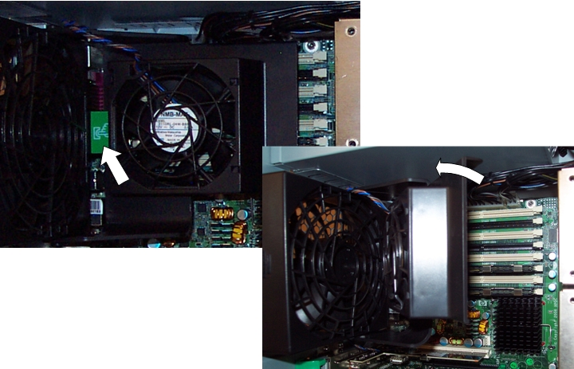
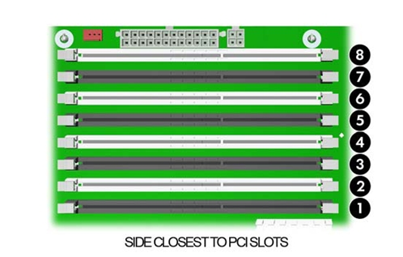

Operating Documentation
Direction 5193574-800, Rev# 22
Module Version 2.0, Version Date 8/16/10
Operating Documentation |
| ||||
| System board or component damage could result. | ||||
| The cooling fan is off only when the Host Computer is turned off or the power cable has been disconnected. The cooling fan is always on when the Host Computer is in “On” or “Standby” mode. | ||||
| You must disconnect the power cord from the power source before opening the Host Computer. |
| ||||
| Memory module damage could result during removal or installation. | ||||
| If you do not unplug the power cord while installing memory, your memory modules might be damaged and the system will not recognize the memory changes. | ||||
| Power off and unplug the power cord from the Host Computer. Wait until the LED on the back of the power supply turns off before removing memory. |
| ||||
| Turn off the Host Computer before disconnecting any cables. | ||||
| ||||
TO PREVENT DAMAGE TO COMPONENTS WITHIN THE HOST COMPUTER, OBSERVE
THE FOLLOWING ESD PRECAUTIONS:
FOR FURTHER INFORMATION REGARDING ESD PROTECTION, REFER TO THE SAFETY CHAPTER IN THIS PUBLICATION | ||||
| Condition | Reference | Effectivity |
|---|---|---|
Use only industry-standard, ECC registered, DDR2-667 DIMMs | - | - |
Match DIMM pairs by size and type | - | - |
No support for unbuffered memory | - | - |
Lay the Host Computer on its side with the system board facing up.
Release and hinge away the Memory Module Cooling Fan. The cooling fan can be released by pressing the green tab on the left side of the fan.
Illustration 1: Memory Module Cooling Fan

Identify the slot location that contains the suspected faulty memory module.
Illustration 2: Memory Module Slot Locations

Gently push outwards on the socket levers on the slot that contains the suspected faulty memory module.
Lift the DIMM straight up and remove it from the unit.
To install a memory module, reverse the previous sequence and insert memory module in slot where faulty memory module was removed. Be aware of the following considerations:
Memory modules must be loaded in valid configurations. (See Illustration 2 for identifying slot locations.)
If loading only one DIMM, install it in slot 1. Otherwise, DIMMs must be loaded as matched pairs.
If loading two DIMMs, install them in slots 1 and 3.
If loading four DIMMs, install them in slots 1, 3, 5, and 7.
If loading six DIMMs, install them in slots 1 through 5, and 7.
If loading eight DIMMs, install them in all slots.
Load the memory module pairs in order of size, from smallest to largest.
| NOTE: | The BIOS generates warnings/errors on invalid memory configurations. |
If there is no way to obtain a valid memory configuration by disabling some of the plugged-in memory, the BIOS will halt with a diagnostics 2006 code for memory error (five beeps and blinks).
If the BIOS can find a valid memory configuration by disabling some of the plugged-in memory, it will do so and report a warning during POST (“215-mismatched memory”). The system can still be booted in this condition.
Return to the HP xw8400 Lower Level FRU Replacement procedure.